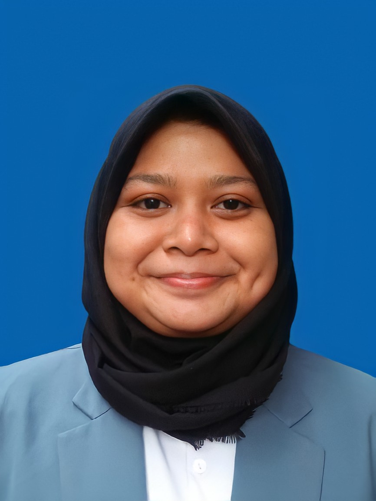

My Curriculum Vitae

Prolouge
I am an active undergraduate student at Universitas Pendidikan Indonesia majoring in
Marine Information Systems who is enthusiastic and highly motivated, initiative,
and likes to seek new challenges. I am a responsible person and like to learn new things.
I can work under pressure and work together in a team.
Education
- 2008 - 2014 : SDN 2 Kedungsana
- 2014 - 2017 : SMPN 1 Plumbon
- 2017 - 2020 : SMAN 1 Plumbon
- 2020 - Now : Marine Information System Departement Indonesia University of Education
Organization
- 2017 - 2018 : Member of Commission D of the Class Representative Council of SMAN 1 Plumbon for the 2017/2018 period
- 2018 - 2019 : Secretary of the Class Representative Council of SMAN 1 Plumbon for the 2018/2019 period
- 2019 - 2020 : Advisory Board OSIS - MPK SMAN 1 Plumbon
Experience
- 2019 : Secretary at the annual "Hari Kartini" SMAN 1 Plumbon
- 2019 : Secretary in the Leadership Basic Training event OSIS - MPK for the 2019/2020 period
- 2021 : Participation as a Volunteer Campaign "Memaknai Kemerdekaan di Tengah Pandemi"
- 2021 : Partisipation in joining the International volunteering campaign themed "Surviving Pandemic" by Healthy Bouquet
- 2021 : Participants of the "Hari Remaja Internasional" Campaign by the Psychofarm Community
Last Project
- 2021 with team : Web GIS Daerah Potensi di Kota Serang
- 2021 with team : Banggai Cardinal Fish (Pteropagon kauderni) Ikan Hias Endemik Kepulauan Banggai yang Diburu Pasar Internasional